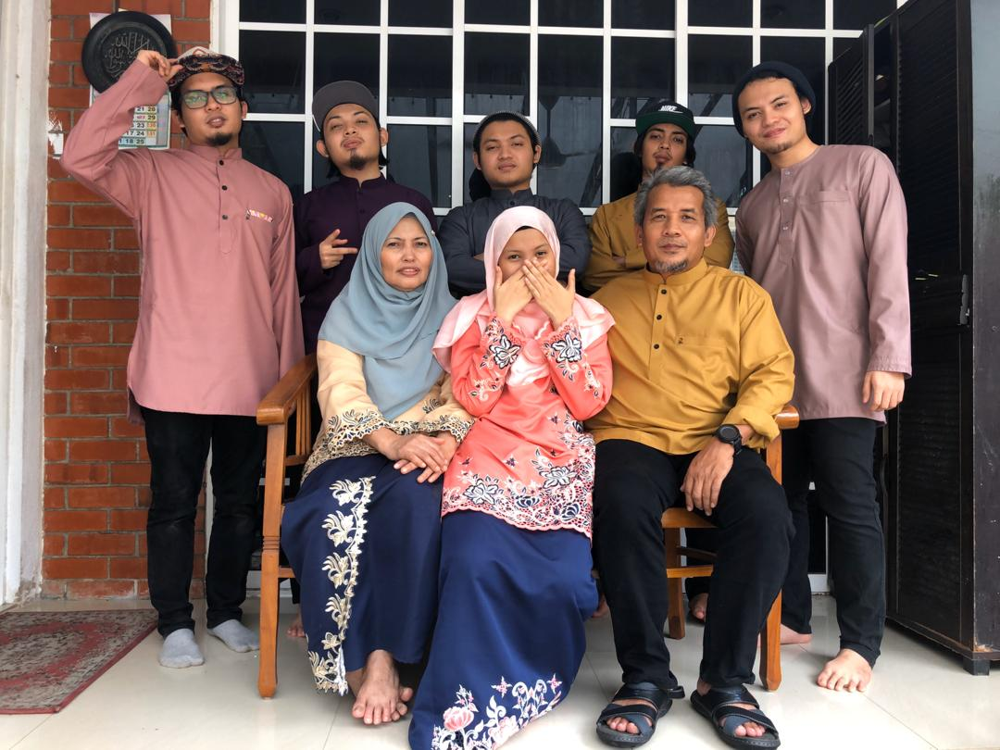
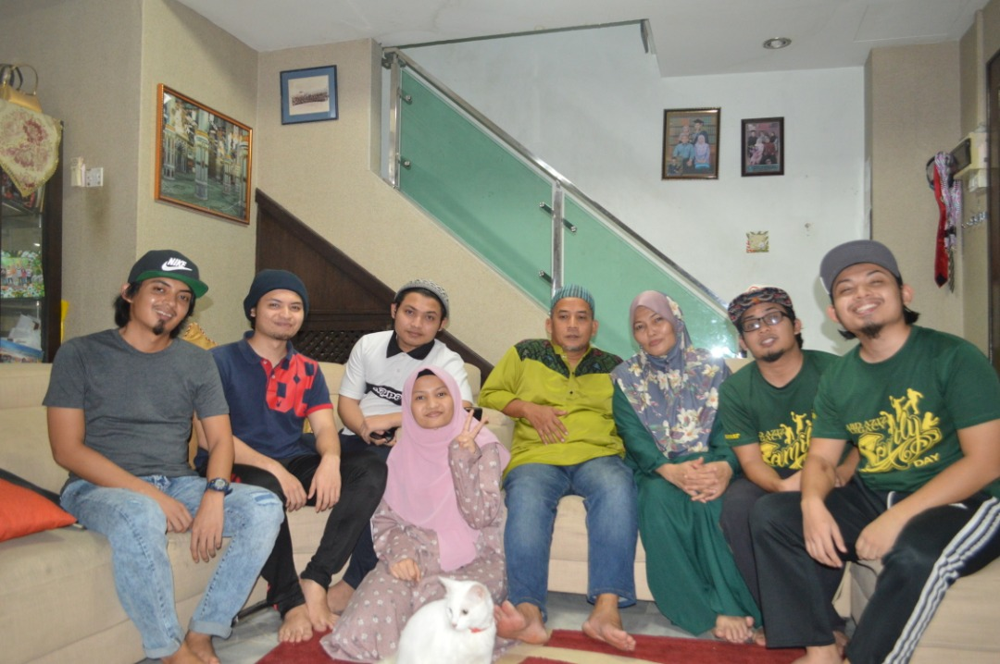
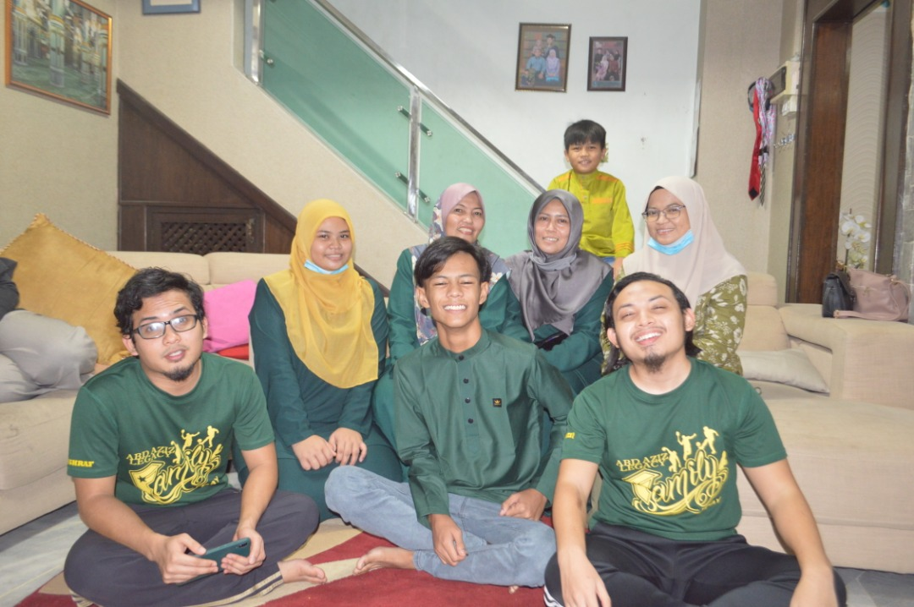
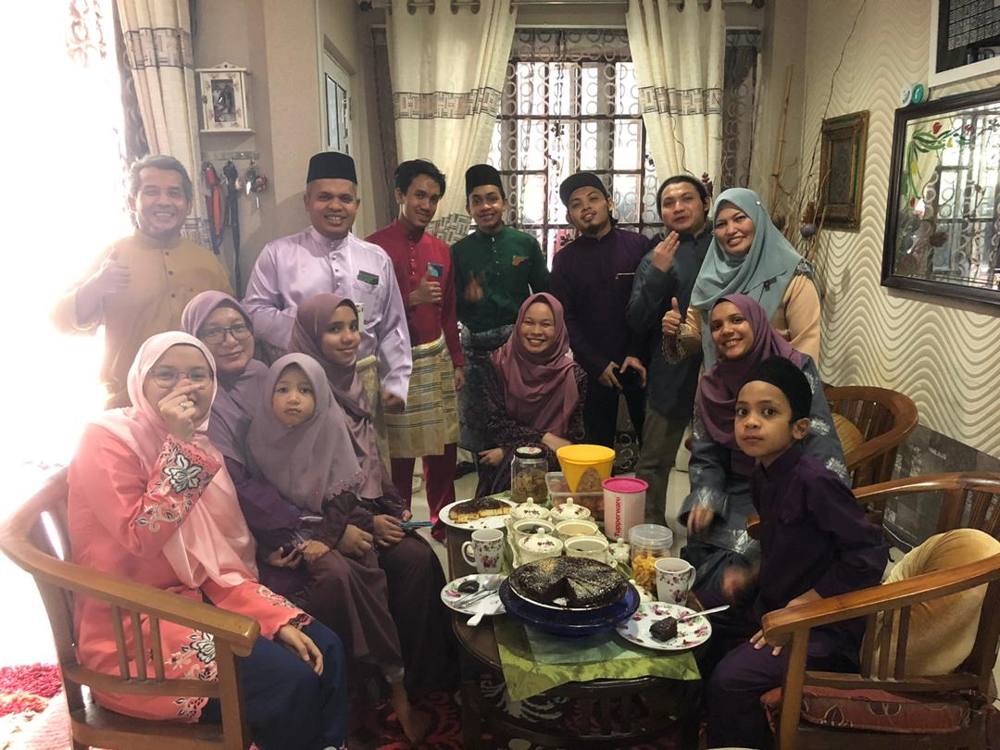
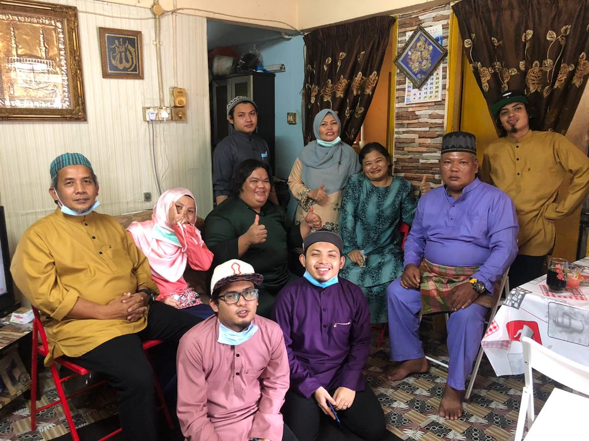
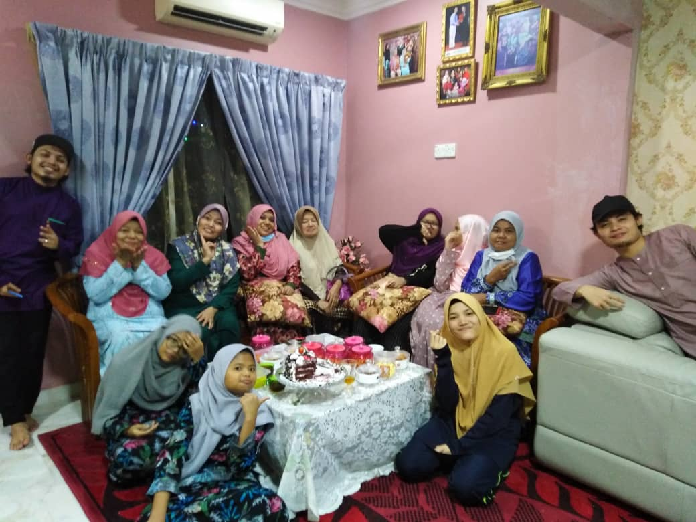

Raya this year will be different for every Muslim around the world since we are under MCO by goverment of Malaysia.But it does not mean that we should just make our Eid Fitri just like normal days because Hari Raya is the day that a winning day for us after Ramadhan.We should celebrate it happily with our new clothes Baju Melayu.Baju Kurung and Kuih Raya also with special menu in Hari raya which is Rendang and Lemang.
This is my story of Hari Raya MCO version 2020
Here is my first day of Hari Raya picture during MCO which just taking a picture in front of my house
|  |  |  |  |
Next is my family house visit during first day of Hari Raya which is allowed only on first day but maximum below 20 people
Ofcourse we all wearing our mask and bring our own sanitizer yeeeee ^_^
|  |  |
And then, this is our Hari Raya celebration video of MCO version and also with a little video of takbir Hari Raya in my house.That is me on red Baju Melayu lead the takbir of my family.Usually during the first night of Hari Raya,my big family will gather everyone with my other family come into my house and takbir together.Unfortunately,not this year hmmm :')